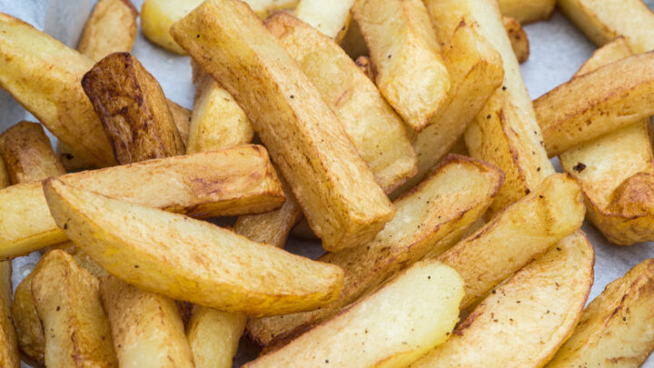

Perfect Oven Chips!

How to make beautiful oven chips.
Today's recipe ensures great tasting perfect oven chips!
Ingredients:
- 1kg large Maris Piper potatoes , peeled
- 1 tbsp white or malt vinegar
- 75ml vegetable oil
- 2 tsp plain flour
- 2 tsp cornflour or potato flour
- ½ tsp baking powder
- small pinch cayenne
Instructions
- Trim all the rounded edges off the potatoes to make a rectangular block,
then cut this into thick batons (save any offcuts to make mash). Drop
into a pan of cold salted water with the vinegar and bring to the boil.
Simmer for 6-8 mins until the potatoes are just cooked and tender –
test with the tip of a knife. Drain carefully, trying not to break any
of the chips, and leave to cool completely. Can be prepared up to two
days ahead and chilled until needed.
- Heat the oven to 220C/200C fan/gas 9. Pour the oil into a sturdy,
rimmed baking tray or shallow roasting tin and heat in the oven.
Mix the flours with the baking powder, cayenne and some salt in a
shallow dish and gently toss the chips in the floury mixture to coat,
then leave in the mixture until needed.
- Carefully remove the pan from the oven – the oil should be shimmering
– and lay the chips in a single layer in the pan. Use a thin, flexible
spatula to gently turn the chips so they are all coated, then roast for
20 mins. Turn the chips again, then roast for another 10 minutes. Turn
one final time, then cook for a futher 10 minutes until crisp and deep
golden all over. Drain the chips onto kitchen paper and serve straight away.
Click here for more great recipes!